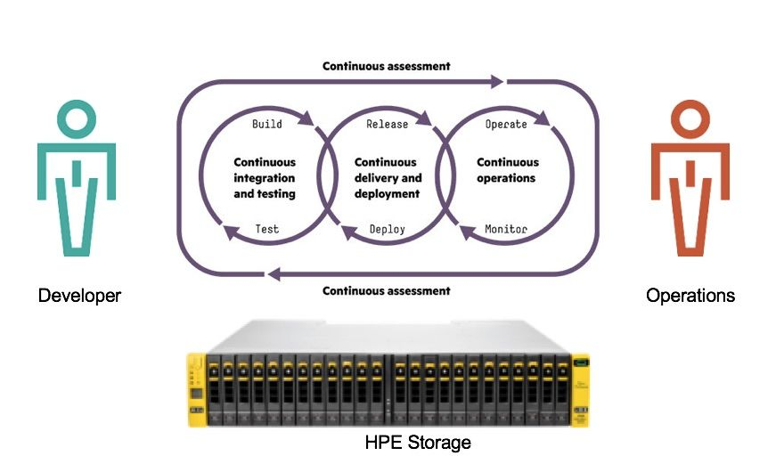

DevOps – a cultural shift
Success today is defined by the ability to turn ideas into value faster than your competition, how quickly you can experiment, fail fast, learn fast, test, tune and make it better. The behavior of developers is to make changes and enhance the application to generate revenue streams. Operations, on the other hand, is all about stability and reliability to keep business running 24/7. So how can you reconcile these two conflicting views and reduce friction between the teams? Enter DevOps. DevOps is not a technology but it is a process and a mindset change to promote collaboration between Dev and Ops teams. According to research from Puppet Labs, IT organizations embracing DevOps deploy 200x more frequently, have 24x faster recovery times, 3x lower failure rates and spend 22% less time on unplanned work and rework. This is not a coincidence because these organizations have implemented a process of Continuous Integration and Continuous Deployment (CI and CD) where every step of the application lifecycle from development to deployment is automated with feedback loops for continuous improvement. 